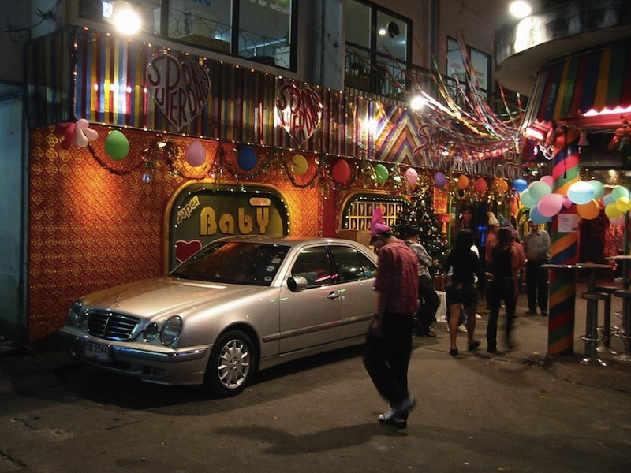

Walking Street, Паттайя
Самая известная улица в Паттайе это Walking Street, всем туристам обязательно рекомендуют ее посетить, а китайские и японские туристы так вообще ходят по ней группами с гидом. Каждый кто бывал в Паттайе обязательно пишет о Walking Street, и отзывы эти замечательны своей шаблонной стереотипностью. Я попробую сделать еще один.
Walking Street это небольшая улочка от пирса до Паттайя Саи Нынг (พัทยาสายหนึ่ง) именуемой в народе Бичкой. Правильнее говорить не только про эту маленькую улочку, но и про все переулки (сойки) из нее выходящие. В дневные часы это почти обычная улица, здесь ходит транспорт, работают массажные и спа салоны, ресторанчики, Кодаки, интернет-кафе, дайверские агентства и просто продавцы экскурсий, вместе с барами, кафешками, McDonald's, обменниками и прочими туристическими необходимостями. Зайдя на Walking Street днем или утром, ты не увидишь почти ничего особенного.

Однажды днем ко мне подошла девушка с блокнотиком и спросила откуда я приехал. Заметно огорчилась, узнав что из России. "Москва? Санкт Петербург?" - с надеждой спросила она. "Нет, - ответил я. - Сибирь", - зачем мне человека обманывать. "Спасибо, до свидания", - с тем она и удалилась, оставив меня гадать о значении вопросов. В другой раз я хотел зайти в Кодак чтобы сделать пару фото, но в полуденный час Кодак оказался закрыт. Немного сонное днем место.
День в Паттайе круглый год оканчивается примерно в одно и то же время, почти экватор, все-таки, и в шесть начинается ночь. Сонная прежде, Walking Street начинает просыпаться и закрывается от транспорта. С наступлением темноты она остается доступна только пешеходам, которые не спеша подтягиваются, открываются бары, музыка становится громче. До восьми, впрочем, делать тут особо нечего.
Придя на Walking Street после восьми вечера, ты увидишь все сразу. Туристическая полиция охраняет туристов от опасностей. Мим, выбелив лицо и одежду, сидит с белой куклой, оба мертвые и в кровавых ранах. Карточный фокусник собрал вокруг себя толпу в круг. Робот из MIX в сопровождении двоих барышень с трудом передвигает ноги в сторону Бички. Странная Дама поет свою грустную песню из звуков "а" и "о", а в пяти шагах от нее играют песни Цоя.
Время с восьми до часу ночи, это время, когда на Walking Street стекаются тысячи туристов. Они идут сплошным потоком в обе стороны, потому что они должны посмотреть на это "логово разврата", и они смотрят. Смотрят на фокусника, и на мальчишек из брейк команды, и на очень гибкую девочку-гимнастку. Смотрят на девушек у дверей аго-го баров, те смущаются, ведь снаружи работают самые молодые, у которых есть женихи и вся жизнь впереди такая красивая, а тайки стеснительны, но посетителей привлекать надо и они кричат "hello" всем подряд и улыбаются.
Пожилая японка теребит за шиворот зависшего деда, своего мужа, и тащит его догонять группу. Дед не реагирует, он вылупился на танцующую на лестнице русскую хостес Galaxy a go-go. Японка, злая, плюет на все и бросает мужа одного, торопясь догнать остальных. Дед счастлив. Вот ключ к магии Walking Street, здесь люди счастливы. Веселье летает в воздухе, оно приходит с моря, или из баров с парами алкоголя, а может быть из кальянных, или из бутылки Breezer, взятой здесь же в 7/11, не могу сказать точно откуда, но тут оно есть и его хватит на всех.
А посреди этого бедлама работает интернет кафе и люди в наушниках играют в онлайн игры, на них можно смотреть как на рыб в аквариуме. На тебя же смотрят десятки джентльменов, потягивая пиво в бир-барах, и леди, кормя лишней кожей с ног аквариумных рыбешек, и Рональд, веселый клоун McDonald's, расслабившийся на скамейке. В быдлокафе продолжается праздник детства, и группа "Руки Вверх" с Юрой Шатуновым заставляют пузатых дядь и теть прыгать и танцевать.
На сойках тоже кипит жизнь, открываются бары и там, и рок-музыка перемешивается с клубной, а посреди этого прямо на улице стоят столы и готовят самый лучший стрит фуд в Паттайе из морепродуктов. За одним из столов пожилой англичанин спрашивает меня откуда я приехал. "Россия", - отвечаю я и снова получаю удивленный взгляд. "Ты говоришь по-английский?" - обычный вопрос. "Совсем немного", - стандартный ответ. "В этом проблема русских. Они не говорят по-английски", - выносит диагноз собеседник. Что ж, по крайней мере это не проблема на Walking Street.
В таком ключе жизнь продолжается на Walking Street до полуночи и заполночь, до двух часов ночи, когда бары закрываются, основная толпа туристов проходит и пускают транспорт. На улицу приезжает множество лотков с едой, из баров выходят отработавшие свою смену девушки, и отправляются либо поесть, либо продолжить вечер на дискотеке, в зависимости от того насколько они уже пьяны и насколько они хотят или надеются сегодня заработать. Пустовавшие до того дискотеки заполняются уже отменно веселыми посетителями и ночь продолжается там.
На Walking Street есть дискотека ZAB, не ориентированная на фарангов, а ориентированная на тайцев, приехавших из Исана, она ютится у самого краю, почти под буквами. Там можно получить представление о местных дискотеках, и там отдыхают душой работники туристической сферы. Остальные же перемещаются в Marine, Lucifer и другие места. На улице появляются ледибои, их становится все больше, и они все сильнее пристают к пьяным.
Пожалуй где-то тут, на выходе из дискотеки в четыре утра, ускользнувшего от ледибоя, пьяного и счастливого, я оставлю тебя добираться домой. После полудня ты проснешься, позавтракаешь, посмотришь на часы - на пляж уже поздно, еще вздремнуть пару часиков - и снова на Волкин!
Бонусное видео тем кто дочитал до конца.